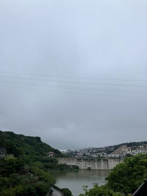
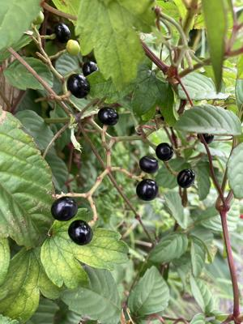

うるがいの話 ある日
最新: ヤブガラシの実【うるがいの話 ある日】とは 一日だけのプログです
『うるがいの話』の最新一日だけのプログで、通信料が少なく経済的だ。カニの画像をクリックすると全ての日付が載る『うるがいの話』サイトを表示します
|
|
【うるがいの話】 うるがい(ｳﾙｶﾞｲ urugai)とは、『もずくがに』の名前でとても大きくなります。 |
|---|---|
|
|
【カミマヤーの話】 猫のことを方言でマヤーといいます。カミマヤー（kamimayaa）とは、神の猫のことです。 |
|
【たながぁの音楽】 たながぁ（ﾀﾅｶﾞｰ tanagaa）とは手長えびのことで、何種類かあり大きいのは車 エビぐらいになります。 |

|
【ぶながぁの話】 ぶながぁ(ﾌﾞﾅｶﾞｰ bunagaa)とは、赤い髪の毛、赤い身体、そして身長は１ｍ２０ｃｍ ぐらい、川の蟹を食べているの目撃された。場所は沖縄県国頭郡大宜味村のと ある村僕の隣近所に住んでいる爺さんから、聞いた話です。 |
|
|
【ギーマの話】 ギーマ(giima)とは、山原の里山に咲くスズランに似た、 花を付けます。実は食べられます、 気が付くと口の周りが紫になっています。 |
2024年06月02日 (日）ヤブガラシの実
17:22

ジョギンギしていると何やら、美味しいそうな実がなっていた。山葡萄でも
ないし、と写真を撮って調べた。『ヤブガラシの実」のようだ、食べると危
険とはない、ただし、美味しいともない。それでは食べてみるかと、昨日一
つぶ恐る恐る食べてみた。草の味がして、食べたあとになにかトゲトゲとし
た食感がした。口に入れたものは、全て出す。とても、食べられたものでは
ない。トゲトゲ感は、家に帰るまで続いた。こんな、変な事をするのはヤン
バル育ちの私しかいないのでは。

コドモの親友の６８才になる父親が、ガンで亡くなったとの親友からコドモ
に連絡が昨日あったとのこと。昼前コドモが、親友の実家に行くというので
車で連れていく、３０分も待たされた、コドモが高校生のころ時々、この親
友の実家に車で送り迎えたをした。待たされることも度々だった。
１７時１７分 ビットコインの総資産 ￥３０、９０７（↑４８）